Praktikum Laravel: Routing, View, dan Controller
1. Pendahuluan
Laravel dikenal secara luas sebagai salah satu kerangka kerja atau framework bahasa pemrograman PHP yang paling diminati untuk membangun berbagai aplikasi berbasis web. Dengan menerapkan pola arsitektur Model-View-Controller atau MVC, framework ini memfasilitasi proses penulisan kode yang lebih sistematis, terorganisir, dan mudah untuk dipelihara.
Modul praktikum ini dirancang sebagai pengantar bagi mahasiswa untuk mengenali dasar-dasar Laravel, mencakup identifikasi perangkat lunak pendukung yang diwajibkan, pemahaman susunan direktori dasar dari sebuah proyek, serta pengenalan konsep MVC yang menjadi pilar fundamental dalam perancangan sistem. Rangkaian pembelajaran ini menjadi fondasi krusial sebelum praktikan melangkah pada tahapan pembuatan sistem web yang lebih rumit pada sesi berikutnya.
2. Tujuan
- Menguasai konsep-konsep fundamental dari kerangka kerja Laravel sebagai instrumen pengembangan web.
- Mengidentifikasi sekaligus menyiapkan berbagai perangkat lunak pendukung maupun prasyarat awal guna memfasilitasi sebuah proyek Laravel.
- Memahami anatomi susunan berkas standar pada proyek Laravel dan mengimplementasikan konsep arsitektur yang terdiri dari Model, View, beserta Controller.
3. Alat atau Tools yang Dipakai
Berikut ini merupakan daftar tools atau aplikasi yang wajib disiapkan selama berjalannya praktikum.
- Laragon atau XAMPP
- Visual Studio Code
- Composer
- Git
- Node JS
- NPM
- GitHub
4. Langkah Pengerjaan
Fase ini difokuskan pada tahap persiapan lingkungan kerja sekaligus pengaturan awal proyek Laravel sesuai dengan instruksi yang tertera pada modul. Rangkaian aktivitas yang akan dilakukan meliputi tahap verifikasi kesiapan sistem, instalasi kerangka kerja, peluncuran server lokal, hingga eksplorasi terkait struktur folder dan konsep dasar MVC.
4.1 Verifikasi Prasyarat Sistem
Langkah paling awal sebelum memulai proses pembuatan proyek adalah memvalidasi ketersediaan berbagai aplikasi pendukung. Kelancaran tahapan pembuatan dan pengembangan sangat bergantung pada keberadaan PHP, Composer, Git, Node JS, beserta NPM di dalam sistem komputer.
Cara pengecekan versi spesifik untuk tiap perangkat lunak melalui terminal dapat dilakukan dengan beberapa perintah berikut.
php -vcomposer --versiongit --versionnode -vnpm -v
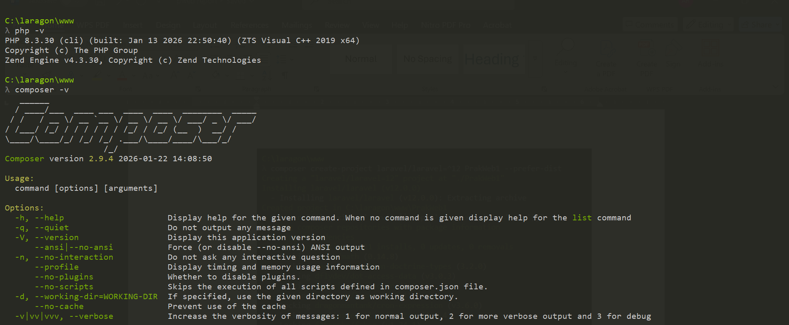
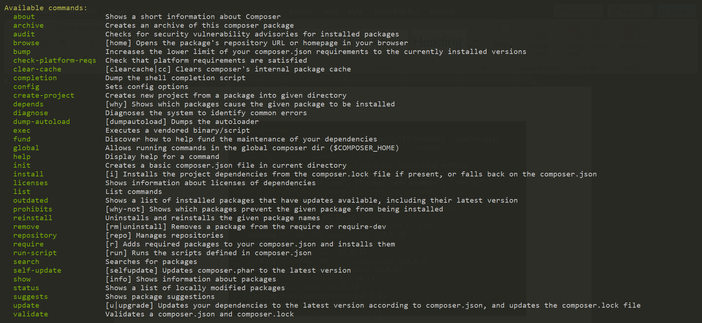
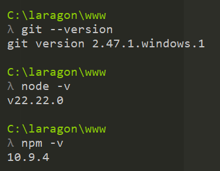
Apabila seluruh perintah tersebut berhasil menampilkan informasi versi masing-masing perangkat lunak, maka proses instalasi dapat dinyatakan sukses dan sistem siap untuk digunakan.
4.2 Membuat Proyek Baru Laravel
Setelah seluruh spesifikasi sistem dipastikan aman, tahapan dilanjutkan dengan pembentukan proyek Laravel. Pada sesi ini, pembuatan kerangka awal aplikasi dilakukan menggunakan Composer sehingga struktur dasar proyek dapat dibuat secara otomatis.
Perintah yang dapat dijalankan pada terminal untuk membangun proyek dengan nama PraktikumWeb1 adalah sebagai berikut.
composer create-project laravel/laravel PraktikumWeb1 --prefer-dist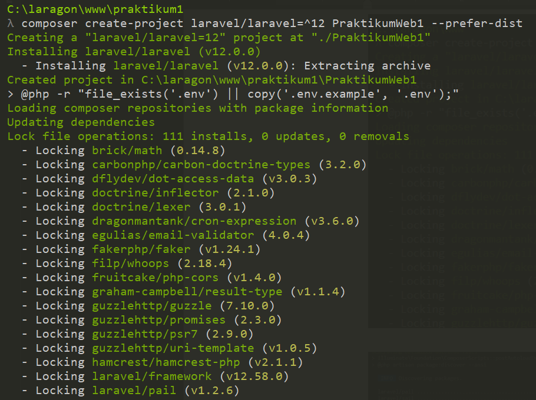
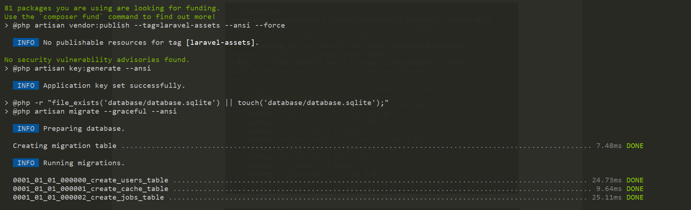
4.3 Mengakses Direktori Proyek
Bila proses instalasi telah selesai tanpa kendala, terminal diarahkan ke dalam folder proyek yang baru dibuat agar proses pengembangan dapat dilanjutkan dari lokasi kerja yang benar.
cd PraktikumWeb1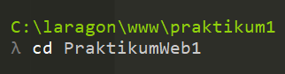
4.4 Mengaktifkan Server Lokal Laravel
Untuk mengoperasikan proyek tersebut, jalankan server lokal bawaan Laravel melalui Artisan. Setelah itu, situs web dapat diakses melalui browser menggunakan alamat URL yang ditampilkan oleh sistem. Munculnya halaman beranda bawaan Laravel menjadi tanda bahwa aplikasi telah terkonfigurasi dan berjalan dengan normal.
php artisan serve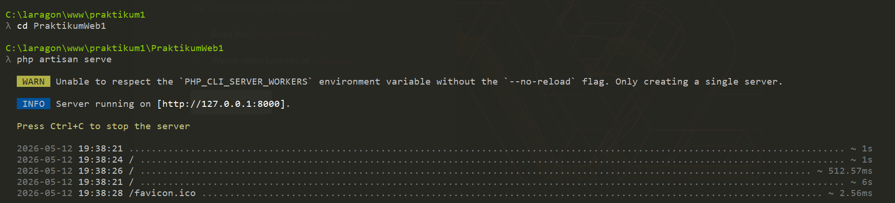
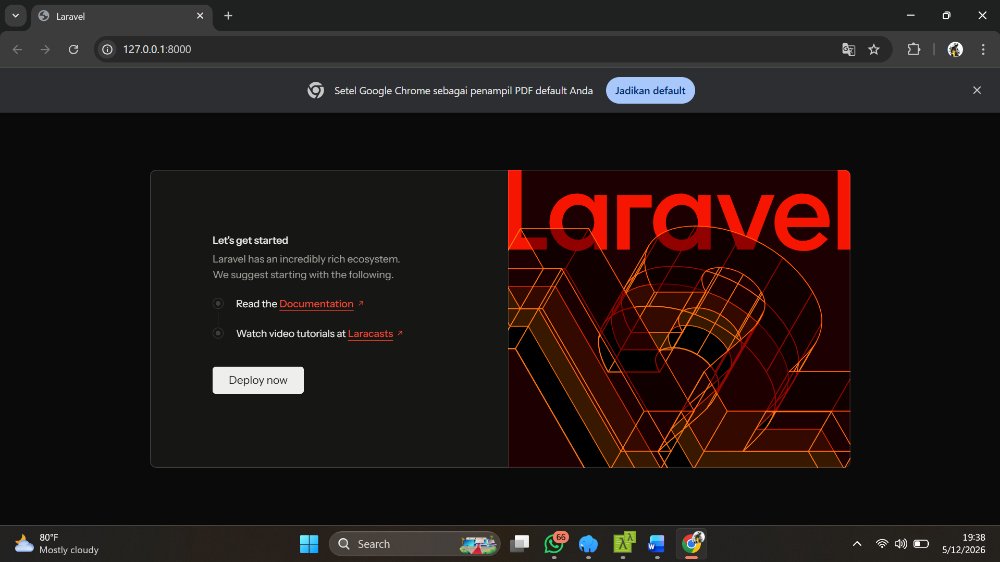
4.5 Pengujian dengan Halaman Sederhana
Sebagai langkah konfirmasi lanjutan setelah aplikasi berhasil dijalankan, praktikan diminta untuk menampilkan halaman teks sederhana berupa Hello World. Tujuan dari pengujian ini adalah untuk memvalidasi bahwa pengaturan route serta tampilan respons dari aplikasi Laravel dapat berjalan tanpa error.
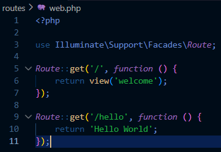
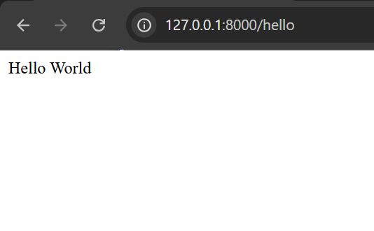
4.6 Challenge
- Buat controller
UserController. - Buat function bernama
index. - Buat view di dalam folder
resources/views/user/index.blade.php. - Di dalam file index, buat tampilan HTML sederhana.
- Buat routing
/useryang menampilkan view tersebut.
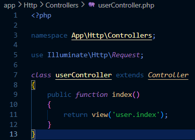
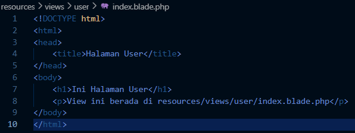
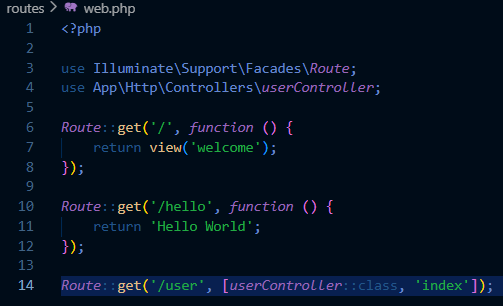
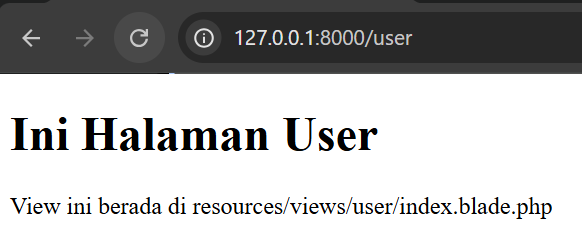